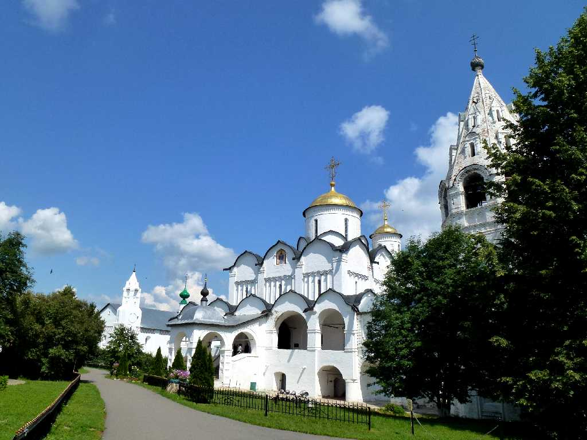
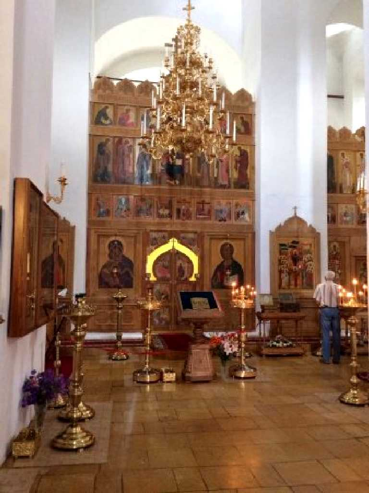
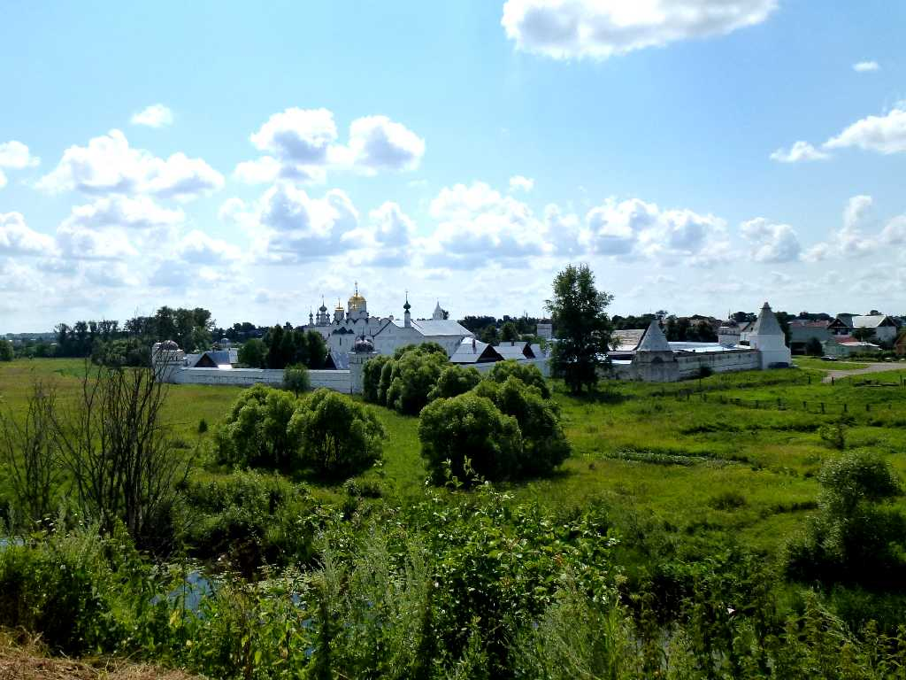
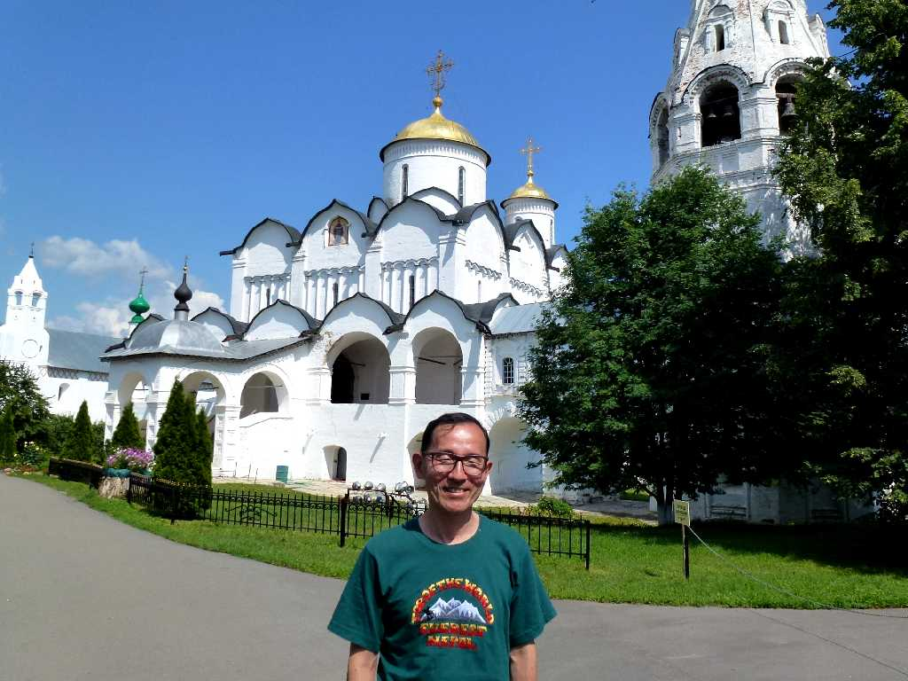
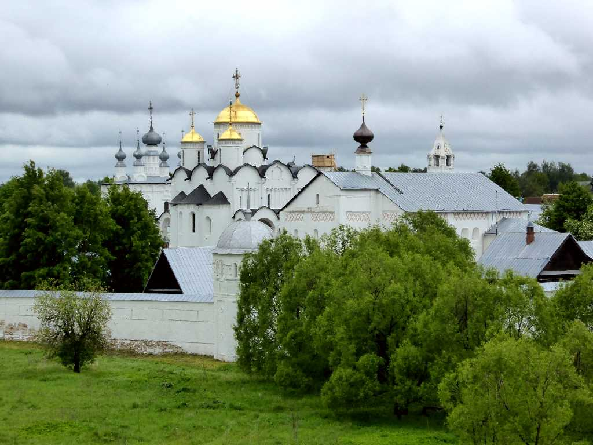
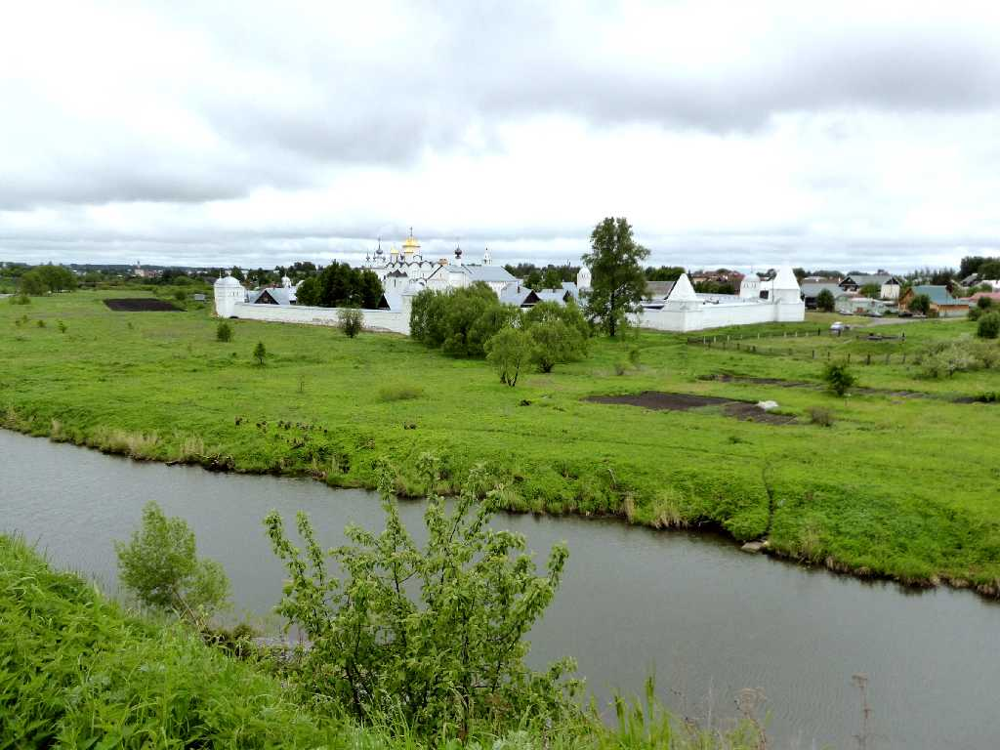
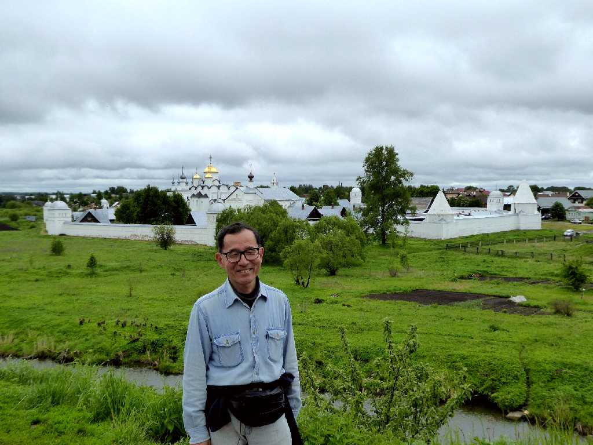

Pokrovsky Monastery Suzdal
８０日間世界一周鉄道の旅で１５日目 スーズダリのポクロフスキー修道院

Altar Pokrovsky Monastery
１６世紀に木造で創られ後に石造りに改築された女子修道院

Pokrovsky Monastery
ピヨトルⅠ世の妻が暮らしていたと伝えられる女子修道院

July 8 2013 Pokrovsky Monastery

Pokrovsky Monastery Suzdal
８０日間世界一周鉄道の旅で訪問以来４年ぶりの再訪問

Pokrovsky Monastery Kamenka River

June 6 2017 Pokrovsky Monastery